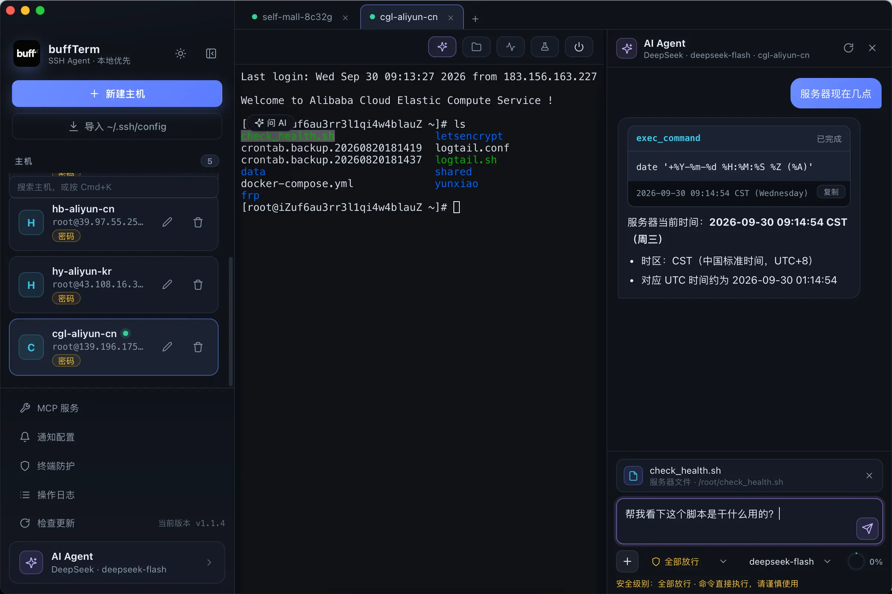

🧠
自研 AI Agent
手写 Agent 编排层，无框架依赖。SSE 流式解析、工具调用循环、审批拦截、审计留痕全部可控。
- exec / read / 巡检 / 趋势分析
- 三级安全级别 + 自定义规则

点击放大自研 AI Agent 编排层 + 协议级 SSH：AI 能力与安全管控全部在应用内完成，不依赖任何第三方 Agent 框架。
手写 Agent 编排层，无框架依赖。SSE 流式解析、工具调用循环、审批拦截、审计留痕全部可控。
把勾选服务器开放给 Codex / Claude Desktop。Streamable HTTP + token 认证，只读 / 管控 / 放行三档权限。
只读基线采集 + 中 / 英巡检报告（含木马 / 挖矿风险），确认后自动执行整改步骤，全程审计与邮件通知。
CPU / 内存 / 磁盘 / 负载仪表盘，历史趋势最长 90 天，线性回归估算资源增速与达阈值天数。
基于终端真实命令行判定，Tab 补全、历史回放、编辑键全覆盖。命中规则回车前弹窗确认。
密码与 API Key 经 AES-256-GCM 加密落 SQLite，主密钥存系统钥匙串，数据库拷走也无法解密。
侧边栏一键切换中 / 英，无需重启。界面文字、提示、弹窗、终端提示、后端错误与邮件通知全部跟随语言。
结构化 SFTP 目录管理，行内悬浮按钮即可在内置 CodeMirror 6 编辑器打开远端文件并保存。
协议级 SSH（russh），不调用系统 ssh / sftp；多标签并行、按主机复用连接、空闲自动回收。
不需要重新学习一套运维工具：安装、添加主机，然后用一句话描述任务。
选择 macOS 或 Windows 安装包。macOS 版本未做 Apple 公证，首次打开按系统提示允许即可。
支持密码、私钥、加密私钥与 ssh-agent，也可以一键导入 ~/.ssh/config。
在主机聊天面板描述目标。只读命令自动执行，写操作与危险命令先审批，全过程留痕。
“磁盘快满了，帮我找出占用最大的目录，并给出清理建议。”
“巡检这台服务器，检查异常进程、登录记录和开放端口。”
“把 nginx 升级到最新稳定版，先说明风险和回滚方案。”
在应用内开启 MCP 服务，勾选要开放的主机并选择权限模式。服务只监听 127.0.0.1，token 可随时轮换。
{
"mcpServers": {
"buffterm-ssh": {
"type": "http",
"url": "http://127.0.0.1:48123/mcp",
"headers": { "Authorization": "Bearer <token>" }
}
}
}以应用内「MCP 服务」弹窗生成的配置为准。
真实界面截图，交互与暗色主题一目了然。
把 SSH 交给 AI 之前，先把“数据去哪、谁能执行什么”讲清楚。
SSH 密码、私钥口令、AI API Key、MCP token 与 SMTP 密码统一以 AES-256-GCM 加密存入本机 SQLite，主密钥保存在系统钥匙串。
配置、凭据与审计数据只存本机；AI 对话与巡检内容会发送到你配置的模型平台。私钥与 API Key 永不进入模型上下文。
只读命令自动执行；写操作、危险命令与自定义规则命中时需批准。Agent、MCP、终端防护、文件编辑与整改都写入审计日志。
协议级 SSH，不依赖系统 ssh / sftp 进程。
关于授权、凭据与数据边界的几个直接回答。
是。buffTerm 以 MIT 协议开源，代码在 GitHub，下载安装免费；使用 AI 能力需要你自己配置模型平台的 API Key。
只存本机 SQLite，使用 AES-256-GCM 加密；主密钥保存在系统钥匙串。把数据库文件单独拷走无法解密凭据。
不会。SSH 密码、私钥口令与 API Key 不会进入模型上下文，命令输出在发送给模型前还会过滤密钥、口令等敏感信息。AI 对话与巡检内容会发送到你配置的模型平台。
任意 OpenAI 兼容接口，例如 DeepSeek、Qwen、Kimi、OpenAI 与本地 Ollama。单平台可配置多个模型，并按上下文窗口切换。
当前 macOS 版本未做 Apple 公证。首次打开时在“系统设置 → 隐私与安全性”中允许即可；这不影响凭据加密与本地存储。
目前官方安装包为 macOS 与 Windows，尚未提供 Linux 官方安装包。
不会。服务只监听 127.0.0.1，使用随机 token 认证，支持 token 轮换与三档权限（只读 / 管控 / 全部放行）。
项目仍在快速迭代，下面是从 GitHub Releases 读取的最近版本。
下载 buffTerm，连接第一台主机，让 AI 开始帮你干活。
macOS 版本未做 Apple 公证，首次打开可能需要在系统设置中允许；凭据始终加密存储在本机。